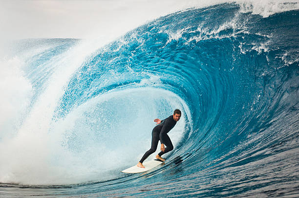

Le Surf
La Chalosse
La Maison de la Vannerie

L'océan
Les fêtes de village

Le quillier de 9

Espelette

ArchéoParc de la Dame

Les promenade à cheval
La randonnée

A proximité des activités trés variées vous attendent, balades équestres, circuits randonnées, visites patrimoniales comme le château et Plantarium de Gaujacq, la Maison et ArchéoParc de la Dame, la Maison de la Vannerie, le quillier de 9, l'océan...